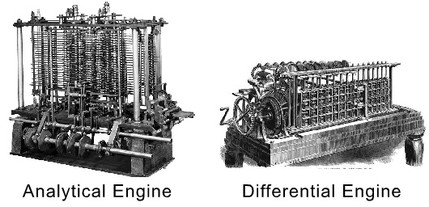

Computer is an advanced electronic device that takes raw data as an input from the user and processes it under the control of a set of instructions (called program), produces a result (output), and saves it for future use. This tutorial explains the foundational concepts of computer hardware, software, operating systems, peripherals, etc. along with how to get the most value and impact from computer technology.
This tutorial has been prepared for beginners as well as advanced learners who want to deal with computers. The tutorial is also very useful for undergraduate students of computer science, engineering, business administration, management, science, commerce and arts, where an introductory course on computers is a part of curriculum.
After completing this tutorial, you will find yourself at a moderate level of expertise in the knowledge of computer basics from where you can take yourself to the next level.
Knowledge of computers is not a prerequisite to follow the contents of this tutorial. This tutorial assumes no background in Computers or Computer programming.
As we know in 19 century Charles Babbage the famous Mathematics professor had its beginning. He designed Analytical Engine (first mechanical computer) successor of the Difference Engine (automatic mechanical calculator) which is known as a basic framework for today’s computer. It is classified into generations and each generation is the improved and modified version of it.
In 1822, British mathematician and inventor Charles Babbage (1791-1871) built the steam-powered automatic mechanical calculator what he called "Difference Engine" or "Differential Engine". It was more than simple calculator. Which is capable of computing several set of number and in result it gives hard copies. Ada Lovelace helped Charles Babbage in development of difference engine. It computes polynomial equations and print mathematical tables automatically.
In 1837, Charles Babbage built the first description of a general mechanical computer, which was the successor of the Difference Engine what he called analytical engine, but never completing while Babbage was alive. It was programmed to using integrated memory and punch cards.
In 1991, Henry Babbage, Charles Babbage's youngest son complete a portion of the machine that perform basic calculations.
Multitasking is one of the major advantage of computer. Person can perform multiple task, multiple operation, calculate numerical problems within few seconds. Computer can perform trillion of instructions per second.
Now computer is not just a calculating device. Now a day’s computer has very important role in human life. One of the main advantages of computer is its incredible speed, which helps human to complete their task in few seconds. All the operations can be performed very fast just because of its speed elsewise it takes a long time to perform the task.
It is a low cost solution. Person can save huge data within a low budget. Centralized database of storing information is the major advantage that can reduce cost.
One of the root advantage of computer is that can perform not only calculations but also with accuracy.
Protecting digital data is known as data security. Computer provide security from destructive forces and from unwanted action from unauthorized users like cyberattack or access attack.
7008904142
Soumya ranjan nath
Sambalpur 768004
soumyaranjannath@gmail.com